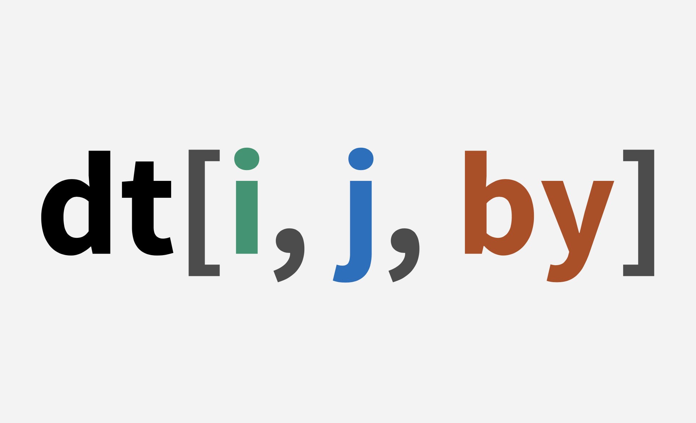

Es una recopilación de “data.table Introduction” y “Listen Data”. Los ejemplos se tradujeron del Ingles al Español para facilitar la comprensión de este paquete.
El paquete data.table es una interfaz de limpieza y transformación de datos altamente optimizada. Este paquete es áltamente eficiente para operar grandes tamaños de datos más conocido como Big Data (por ejemplo, más de 10 millones de filas o > 10 GB). La mayor razón para usar data.table es simple: la velocidad.
Este paquete se diseñó para ser conciso y sin complicaciones. Hay algunas referencias que comparan dplyr vs data.table y en la cual data.table es el ganador. La eficiencia de este paquete también se comparó con el paquete de python (panda) y también gana data.table.
La sintaxis de data.table se muestra en la siguiente imagen:

install.packages("data.table") #Instalar el paquete
En el paquete data.table, la función fread() está disponible para leer u obtener datos de su ordenador o de una página web. Es equivalente a la función read.csv() de R básico.
#base de datos
mydata = fread("https://github.com/arunsrinivasan/satrdays-workshop/raw/master/flights_2014.csv")
Este conjunto de datos contiene 253000 observaciones y 17 columnas. Constituye información sobre la hora de llegada o salida de los vuelos, los retrasos, la cancelación de vuelos y el destino en el año 2014.
names(mydata) #nombre de las variables de respuesta
[1] "year" "month" "day" "dep_time" "dep_delay"
[6] "arr_time" "arr_delay" "cancelled" "carrier" "tailnum"
[11] "flight" "origin" "dest" "air_time" "distance"
[16] "hour" "min" head(mydata) #mostrar las primeras filas de datos
year month day dep_time dep_delay arr_time arr_delay cancelled
1: 2014 1 1 914 14 1238 13 0
2: 2014 1 1 1157 -3 1523 13 0
3: 2014 1 1 1902 2 2224 9 0
4: 2014 1 1 722 -8 1014 -26 0
5: 2014 1 1 1347 2 1706 1 0
6: 2014 1 1 1824 4 2145 0 0
carrier tailnum flight origin dest air_time distance hour min
1: AA N338AA 1 JFK LAX 359 2475 9 14
2: AA N335AA 3 JFK LAX 363 2475 11 57
3: AA N327AA 21 JFK LAX 351 2475 19 2
4: AA N3EHAA 29 LGA PBI 157 1035 7 22
5: AA N319AA 117 JFK LAX 350 2475 13 47
6: AA N3DEAA 119 EWR LAX 339 2454 18 24Suponga que necesita seleccionar sólo la columna origin. Puede utilizar el siguiente código
dat1 <- mydata[, origin] #devuelve un vector
La línea de código anterior devuelve un vector no una tabla de datos.
Para obtener el resultado en formato data.table, ejecute el siguiente código:
dat01 <- mydata[, .(origin)] #devuelve una tabla de datos
El siguiente código le dice a R que seleccione las columnas ‘origin’, ‘year’, ‘month’, y ‘hour’.
dat2 <- mydata[, .(origin, year, month, hour)]
head(dat2)
origin year month hour
1: JFK 2014 1 9
2: JFK 2014 1 11
3: JFK 2014 1 19
4: LGA 2014 1 7
5: JFK 2014 1 13
6: EWR 2014 1 18Puede mantener de la segunda a la cuarta columna utilizando el siguiente código
month day dep_time
1: 1 1 914
2: 1 1 1157
3: 1 1 1902
4: 1 1 722
5: 1 1 1347
6: 1 1 1824Suponga que quiere incluir todas las variables excepto una columna, digamos ‘origin’. Se puede hacer fácilmente añadiendo el signo ! (implica la negación en R)
dat4 <- mydata[, !c("origin")] #eliminar una sola columna
dat5 <- mydata[, !c("origin", "year", "month")] #eliminar varias columnas
head(dat5)
day dep_time dep_delay arr_time arr_delay cancelled carrier
1: 1 914 14 1238 13 0 AA
2: 1 1157 -3 1523 13 0 AA
3: 1 1902 2 2224 9 0 AA
4: 1 722 -8 1014 -26 0 AA
5: 1 1347 2 1706 1 0 AA
6: 1 1824 4 2145 0 0 AA
tailnum flight dest air_time distance hour min
1: N338AA 1 LAX 359 2475 9 14
2: N335AA 3 LAX 363 2475 11 57
3: N327AA 21 LAX 351 2475 19 2
4: N3EHAA 29 PBI 157 1035 7 22
5: N319AA 117 LAX 350 2475 13 47
6: N3DEAA 119 LAX 339 2454 18 24Seleccionamos las columnas arr_delay y dep_delay, luego renombramos como redelay_arr y redelay_dep.
ans <- mydata[, .(delay_arr = arr_delay, delay_dep = dep_delay)]
head(ans)
delay_arr delay_dep
1: 13 14
2: 13 -3
3: 9 2
4: -26 -8
5: 1 2
6: 0 4Otra opción Puedes renombrar las variables con la función setnames(). En el siguiente código, estamos renombrando una variable ‘dest’ a ‘destination’.
Para renombrar múltiples variables, puedes simplemente añadir variables en ambos lados.
Supongamos que se le pide que encuentre todos los vuelos cuyo origen sea “JFK”.
dat6 <- mydata[origin == "JFK"]
Filtrar todos los vuelos cuyo origen sea “JFK” o "LGA
dat7 <- mydata[origin %in% c("JFK", "LGA")]
El siguiente código selecciona todos los vuelos cuyo origen no es igual a ‘JFK’ y ‘LGA’
dat8 <- mydata[!origin %in% c("JFK", "LGA")] #Excluir valores
Si necesita seleccionar todos los vuelos cuyo origen sea igual a ‘JFK’ y la compañía aérea = ‘AA’
dat9 <- mydata[origin == "JFK" & carrier == "AA"]
Podemos ordenar los datos utilizando la función setorder(), por defecto, ordena los datos en orden ascendente.
mydata01 <- setorder(mydata, origin)
En este caso, estamos ordenando los datos por la variable ‘origin’ en orden descendente.
mydata02 <- setorder(mydata, -origin)
En este ejemplo, le decimos a R que reordene los datos primero por el origen en orden ascendente y luego por la variable ‘carrier’ en orden descendente.
mydata03 <- setorder(mydata, origin, -carrier)
Puede realizar cualquier operación en las filas añadiendo el operador :=. En este ejemplo, estamos restando la variable ‘dep_delay’ de la variable ‘dep_time’ para calcular la hora de salida programada.
mydata[, dep_sch := dep_time-dep_delay]
Si no quiere hacer cambios (adición de columnas) en los datos originales, puede hacer una copia de los mismos.
Al igual que el procedimiento SAS PROC MEANS, podemos generar estadísticas de resumen de variables específicas. En este caso, estamos calculando la media, la mediana, el valor mínimo y el máximo de la variable arr_delay.
mydata[, .(mean = mean(arr_delay, na.rm = TRUE),
median = median(arr_delay, na.rm = TRUE),
min = min(arr_delay, na.rm = TRUE),
max = max(arr_delay, na.rm = TRUE))]
mean median min max
1: 8.146702 -4 -112 1494ans1 <- mydata[origin == "JFK" & month == 6L,
.(m_arr = mean(arr_delay), m_dep = mean(dep_delay))]
ans1
m_arr m_dep
1: 5.839349 9.807884En primer lugar, se realiza un subconjunto en i para encontrar los índices de las filas que coinciden con el aeropuerto de origen igual a "JFK" y el mes igual a 6L. Todavía no hacemos un subconjunto de toda la tabla de datos correspondiente a esas filas.
Ahora, miramos en j y descubrimos que sólo utiliza dos columnas. Y lo que tenemos que hacer es calcular su mean(). Por lo tanto, subconjuntamos sólo las columnas correspondientes a las filas que coinciden, y calculamos su mean().
Como los tres componentes principales de la consulta (i, j y by) están juntos dentro de [...], data.table puede ver los tres y optimizar la consulta en conjunto antes de la evaluación, no cada uno por separado. Por lo tanto, podemos evitar el subconjunto completo (es decir, el subconjunto de las columnas además de arr_delay y dep_delay), tanto por velocidad como por eficiencia de memoria.
Para resumir múltiples variables, podemos simplemente escribir toda la función de estadísticas de resumen en un corchete. Véase el siguiente comando.
Si necesita calcular estadísticas de resumen para una lista más amplia de variables, puede utilizar los operadores .SD y .SDcols. El operador .SD implica subconjunto de datos.
arr_delay dep_delay
1: 8.146702 12.46526En este caso, estamos calculando la media de dos variables - arr_delay y dep_delay.
Por defecto, .SD toma todas las variables continuas (excluyendo las variables de agrupación).
mydata[, lapply(.SD, mean)]
year month day dep_time dep_delay arr_time arr_delay
1: 2014 5.638578 15.8937 1338.238 12.46526 1494.33 8.146702
cancelled carrier tailnum flight origin dest air_time distance
1: 0 NA NA 1840.82 NA NA 156.7228 1099.445
hour min dep_sch arr_sch
1: 13.06343 31.89482 1325.773 1486.183fs <- mydata[, .(year, month, day, dep_delay, arr_time, hour)]
fs[, sapply(.SD, function(x) c(mean=mean(x),
median=median(x),
min = min(x),
max = max(x),
sd = sd(x)))]
year month day dep_delay arr_time hour
mean 2014 5.638578 15.893698 12.46526 1494.3299 13.063435
median 2014 6.000000 16.000000 -1.00000 1519.0000 13.000000
min 2014 1.000000 1.000000 -112.00000 1.0000 0.000000
max 2014 10.000000 31.000000 1498.00000 2400.0000 24.000000
sd 0 2.820866 8.763097 41.64876 533.8177 4.897891originmydata[, .(mean_arr_delay = mean(arr_delay, na.rm = TRUE)), by = origin]
origin mean_arr_delay
1: EWR 10.026121
2: JFK 7.731465
3: LGA 6.601968En lugar de by, puede utilizar el operador keyby=.
mydata[, .(mean_arr_delay = mean(arr_delay, na.rm = TRUE)), keyby = origin]
origin mean_arr_delay
1: EWR 10.026121
2: JFK 7.731465
3: LGA 6.601968origin origin V1 V2
1: EWR 10.026121 15.21248
2: JFK 7.731465 11.44617
3: LGA 6.601968 10.60500O bien, puede escribirse como se indica a continuación
origin arr_delay dep_delay
1: EWR 10.026121 15.21248
2: JFK 7.731465 11.44617
3: LGA 6.601968 10.60500ans3 <- mydata[carrier == "AA", .N, by = .(origin, dest)]
head(ans3)
origin dest N
1: EWR LAX 62
2: EWR MIA 848
3: EWR DFW 1618
4: EWR PHX 121
5: JFK LAX 3387
6: JFK MIA 1876For attribution, please cite this work as
Santos (2021, May 5). Franklin Santos: Transformación de datos con el paquete data.table. Retrieved from https://franklinsantos.com/posts/2021-05-05-datable/
BibTeX citation
@misc{santos2021transformación,
author = {Santos, Franklin},
title = {Franklin Santos: Transformación de datos con el paquete data.table},
url = {https://franklinsantos.com/posts/2021-05-05-datable/},
year = {2021}
}